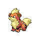
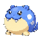
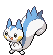
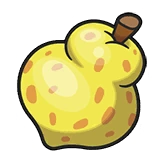

Neukgu — soft cream puppy
Rounded sticker-style puppy, dot eyes, short muzzle and little paws. Review concept only; not a runtime replacement.
z
Royce — round black and tan companion
Rounded sticker-style puppy, dot eyes, short muzzle and little paws. Review concept only; not a runtime replacement.
z


